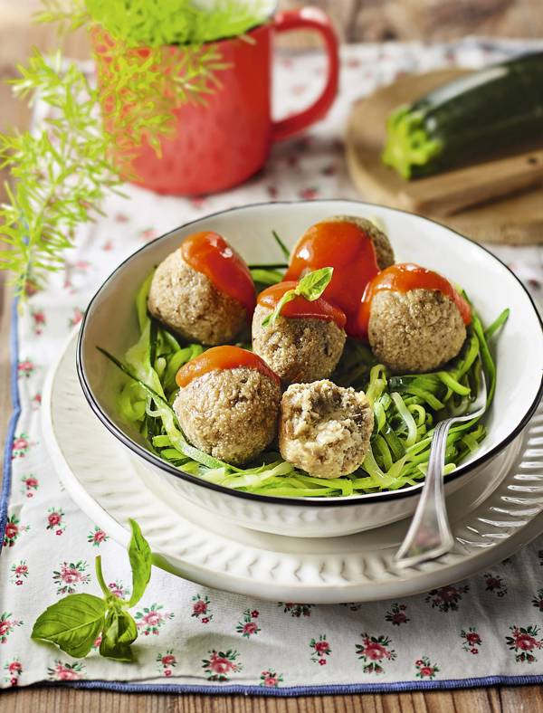

Receta Saludable: Albóndigas de Berenjena con Tomate

Descripción
Buscas una versión saludable de las Albóndigas Tradicionales? Prueba estas Albóndigas de Berenjena con Salsa de Tomate Casera. Son bajas en calorías, ricas en fibra y perfectas para una comida nutritiva. Es un plato muy fácil de elaborar e igualmente delicioso.⏱ Tiempo: 45-50 minutos
Ingredientes (Para 4 Personas)
- 600 Gramos de Berenjenas
- 1 Cebolla Mediana
- 2 Calabacines
- 1 Huevo
- 40 Gramos de Harina de Avena
- 40 Gramos de Pan Rallado
- 300 Gramos de Salsa de Tomate
- Albahaca Fresca
- 1 Hoja de Laurel
- Aceite de Oliva Virgen Extra
- Sal y Pimienta al Gusto
Elaboración
- Pela las berenjenas y córtalas en dados. Ponlas en remojo con sal 30 min, escurre y lava.
- Pela la cebolla y córtala en juliana. Saltéala junto con la berenjena, condimenta y cuece 10 min. Tritura.
- Agrega el huevo, harina de avena y pan rallado. Mezcla y deja enfriar en la nevera.
- Lava los calabacines y córtalos en espaguetis con mandolina.
- Hiérvelos 3 min con sal y laurel. Escurre y reserva.
- Forma albóndigas con la masa, colócalas en bandeja con papel, píntalas con aceite y hornea 15 min a 180 °C.
- Sirve sobre los espaguetis de calabacín, con salsa de tomate caliente y hojas de albahaca.
Información Nutricional (Aproximada por Porción)
| Calorías | Proteínas | Grasas | Carbohidratos |
|---|---|---|---|
| 280 kcal | 9 g | 12 g | 30 g |